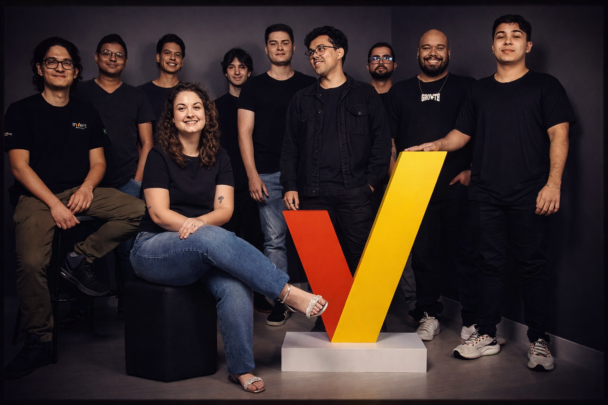

Samuel Santos
Tech Lead • Software Engineer
Desenvolvimento de soluções escaláveis em .NET e Angular, com foco em arquitetura, performance e liderança técnica de times.

Projetos
Aplicações corporativas
Sobre mim
Sou desenvolvedor e líder técnico de Inovação e Tecnologia, com foco em arquitetura, performance. Trabalho com .NET | C#, JavaScript/TypeScript, Angular e SAPUI5, atuando desde a modelagem arquitetural até a entrega de soluções corporativas. Valorizo comunicação clara, escuta ativa e o desenvolvimento de pessoas; minha missão é construir soluções sustentáveis que gerem impacto real no produto e no negócio.
Experiências Profissionais
Coordenador de Inovação e TecnologiaAtual
Liderança técnica em projetos end-to-end, com foco em performance, escalabilidade e decisões arquiteturais orientadas a impacto no produto e no negócio.
- Automação de qualidade com CI/CD, linters, testes e proteção de branches
- Implementação de auditoria como domínio de negócio com rastreabilidade completa
- Moderação assistida por IA com decisão humana final
- Redesenho de modelo de leitura com Map Index (RavenDB) para dashboards analíticos de alto volume, visando performance
Líder Técnico
Mentoria, padrões de código, automações CI/CD e qualidade.
Engenheiro de Software
Desenvolvimento de serviços, APIs e interfaces web com foco em performance.
Projetos em Destaque


Casos Técnicos & Decisões de Arquitetura
Tax Analytics — Performance e Modelo de Leitura
Plataforma analítica com grande volume de dados fiscais e uso intenso de dashboards. Com o crescimento da base, consultas começaram a degradar severamente.
Tratei o problema como um erro de modelagem de leitura, e não como falta de otimização. Redesenhei o acesso aos dados utilizando Map Index do RavenDB, pré-processando agregações durante a indexação.
- Trade-offs: custo maior de indexação, consistência eventual
- Impacto: dashboards com resposta quase instantânea, base preparada para escalar
Auditoria no Admin — Domínio, não Log
Ambiente regulado com exigência de rastreabilidade clara de alterações.
Avaliei o uso de Revisions do RavenDB por meio de POC em escala real, mas optei por uma collection própria de auditoria, explicitamente modelada no domínio.
- Trade-offs: mais storage e responsabilidade na aplicação
- Impacto: auditorias rápidas, compreensíveis e confiáveis
Invent University — Escala e Governança
Plataforma educacional construída do zero, com necessidade de crescimento contínuo.
Implementei validações centralizadas via Action Filters, formulários complexos com FormGroup no Angular, integração direta com a API do Vimeo e migração controlada do Firebase para RavenDB.
- Trade-offs: maior complexidade arquitetural
- Impacto: plataforma preparada para escalar usuários e conteúdos
Moderação de Comentários — IA Assistida
Crescimento da plataforma educacional tornou a moderação manual inviável.
Modelei um fluxo de moderação assistida por IA, onde a decisão final permanece humana, reduzindo carga operacional sem comprometer a experiência do usuário.
- Trade-offs: falsos positivos e dependência de modelos externos
- Impacto: redução operacional com controle e segurança
Processamento em Massa — Estabilidade sob Pressão
Processamento de mais de 100 mil NF-es em ambiente com recursos limitados.
Optei por processamento em lote, controle explícito de memória e liberação progressiva de recursos, priorizando estabilidade ao invés de throughput máximo.
- Trade-offs: processamento mais lento
- Impacto: sistema resiliente e previsível em cenários extremos
Competências Técnicas
Vamos conversar
Parcerias, oportunidades e desafios. Entre em contato nas redes sociais
- 📧 samuel@santos.com
- 🐙 GitHub